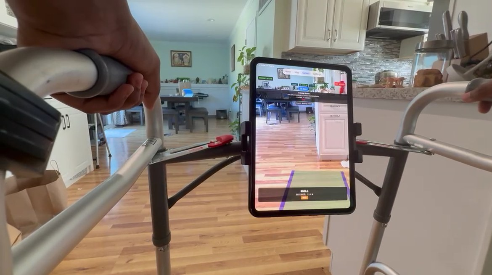
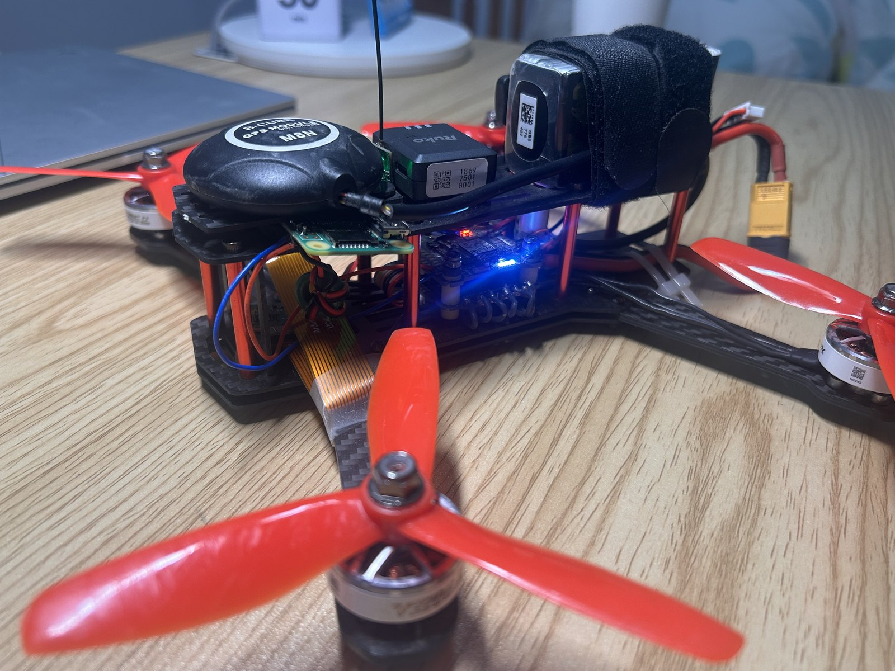
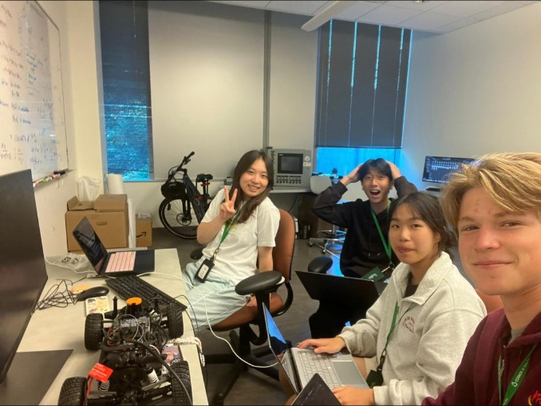

Hidden-data detector
Trained a model to find data hidden inside images. Built an ML + quantum attack detector (99%+ accuracy) and reported to the CTO.

I build machines that see, and point them at problems people live with.

A phone camera on a walker that guides visually impaired seniors through their own homes

A drone I built alone that spots trees from the air and suggests what to plant

All-girls VEX team, 5 to 14 members

Reviving an autonomous race car at UC COSMOS
"Two months ago, these students had a walker that could see. Today, it can guide."
Hidden-data detector
Trained a model to find data hidden inside images. Built an ML + quantum attack detector (99%+ accuracy) and reported to the CTO.
Robotics Outreach
Lead VEX workshops at district elementary and middle schools, 40+ kids each. Build robots for club fundraisers.
Code-Off & Code Nights
Co-hosted the district's family Scratch coding competition (150+ attendees). Brought back Code Nights, short coding lessons for 70+ kids across every district K-8 school.
Blu's Hacks upcoming
Shadowed the organizing team last year, then took over as lead organizer. 60+ participants. Competed in 2024 (honorable mention).
I'm a senior at Branham High School in San Jose. Most of my time goes to Mobile Walker and my drone (I call it Mr. Drone). I'm most interested in computer vision on things that move.
I also like building things for the people (and pets) around me, like tunnels and platforms for my hamster.

Mobile Walker on the App Store
Public release, then partnerships with stores like Walmart and Target so visually impaired seniors can shop on their own.
Locust detection
Teach the drone to spot locust swarms before they reach crops, for farms in Africa.